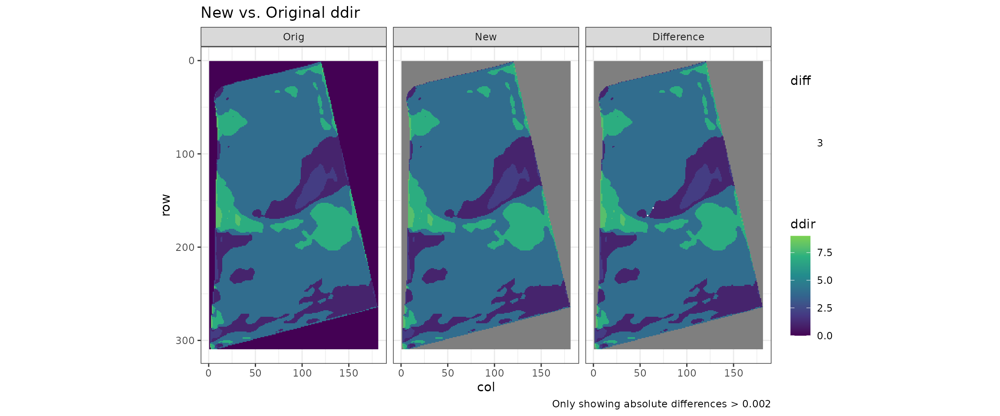
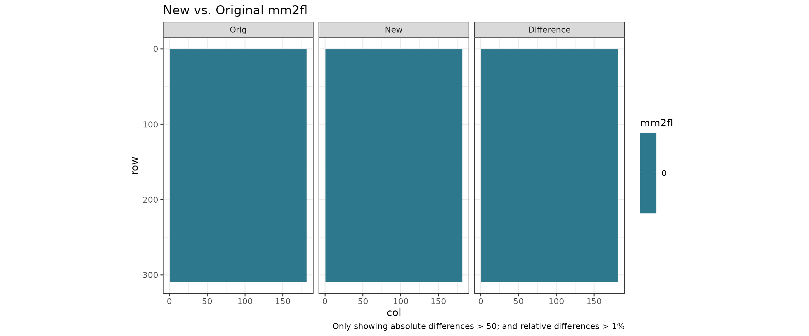
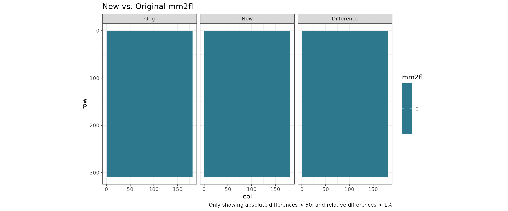
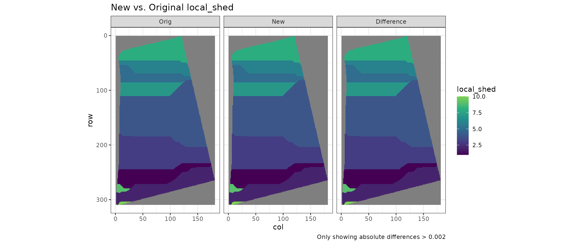
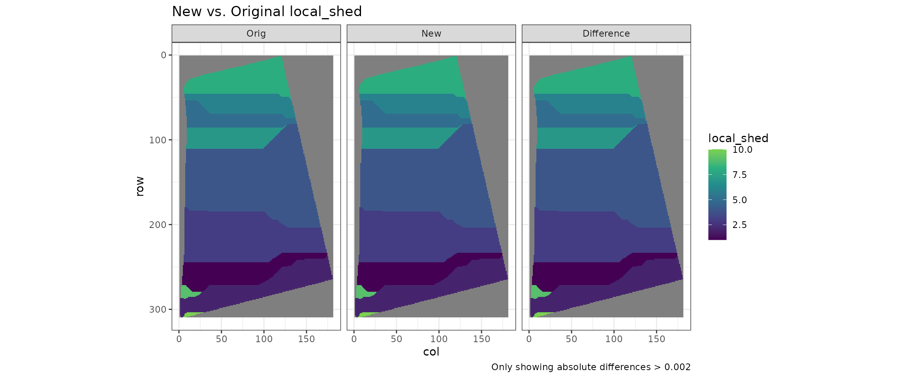
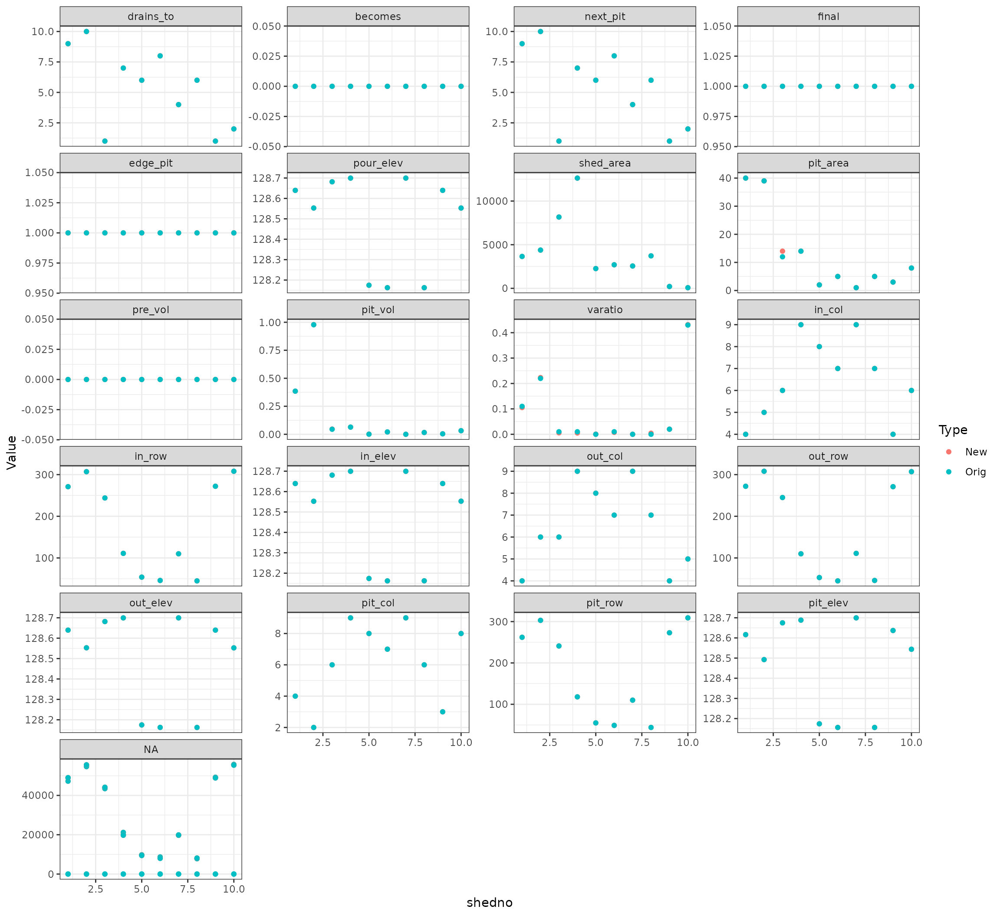
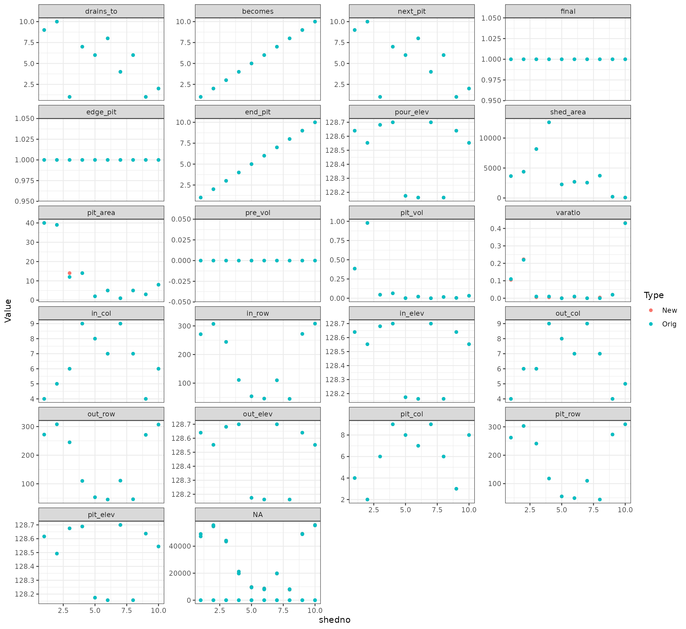
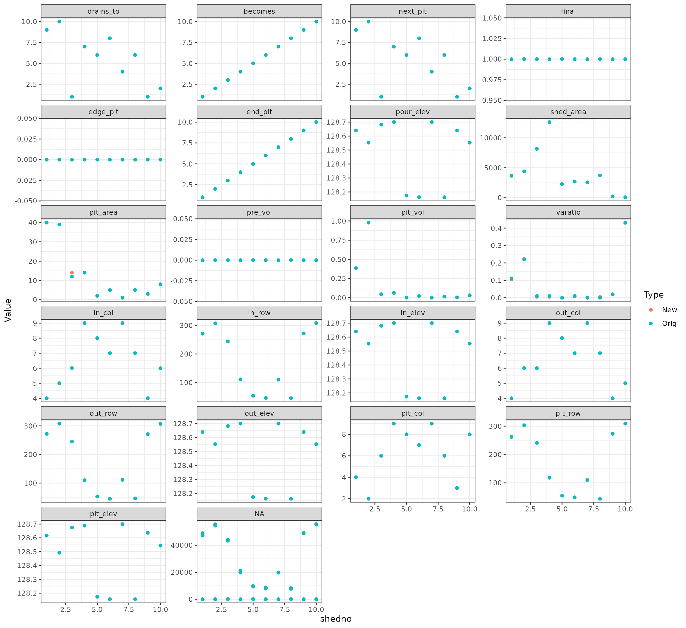

Test Flow - BR3
Steffi LaZerte
2024-10-01
Source:vignettes/reports/BR3_compare_report_flow.Rmd
BR3_compare_report_flow.RmdDetails
- 0.76 min to run
- /home/steffi/Projects/Business/LandmapR/Runs - FlowMapR/BR3 original FlowMapR output
-
grid = NULL(detected and usedgrid = 1)


Visual Comparison of Sheds
Original vs. New Local Shed assignment
- The first shed shows initial pits which are removed in the first step of pit removal (This doesn’t exist in the original program)
- The next two are the local sheds (shedno) after amalgamating the small ones
- Black dots are pit centres (final centres for Orig, local centres for New)
- White outlines are Fill Pour Points for the local watersheds
## Warning: Removed 1 row containing missing values or values outside the scale range
## (`geom_text()`).
## Removed 1 row containing missing values or values outside the scale range
## (`geom_text()`).## Warning: Removed 15561 rows containing missing values or values outside the scale range
## (`geom_point()`).Original vs. New Fill Shed assignment
- These are the fill sheds, which reflect how sheds combined during the third pit removal process
- Black dots are pit centres, white dots are Fill Pour Points for the final watersheds
- Shapes should be identical to pond filling, just the numbers may be different
## Warning: Removed 1 row containing missing values or values outside the scale range
## (`geom_text()`).## Warning: Removed 15561 rows containing missing values or values outside the scale range
## (`geom_point()`).
Numeric Comparison
Compare dem stats
## Warning: Returning more (or less) than 1 row per `summarise()` group was deprecated in
## dplyr 1.1.0.
## ℹ Please use `reframe()` instead.
## ℹ When switching from `summarise()` to `reframe()`, remember that `reframe()`
## always returns an ungrouped data frame and adjust accordingly.
## ℹ The deprecated feature was likely used in the LITAPReports package.
## Please report the issue to the authors.
## This warning is displayed once every 8 hours.
## Call `lifecycle::last_lifecycle_warnings()` to see where this warning was
## generated. 
 

Compare pond stats
Original Pond data
New Pond data
Differences
- Each figure represents a different Pond measurement plotted by watershed
- Blue represents original values, pink new values. If they are identical, pink is hidden by blue
## Warning: Removed 30 rows containing missing values or values outside the scale range
## (`geom_point()`).
Compare fill stats
Original Fill data
New Fill data
Differences
- Each figure represents a different Fill measurement plotted by watershed
- Blue represents original values, pink new values. If they are identical, pink is hidden by blue
## Warning: Removed 30 rows containing missing values or values outside the scale range
## (`geom_point()`).
Compare pit stats
Original Pit data
New Pit data
Differences
- Each figure represents a different Pit measurement plotted by watershed
- Blue represents original values, pink new values. If they are identical, pink is hidden by blue
## Warning: Removed 30 rows containing missing values or values outside the scale range
## (`geom_point()`).
Inverted DEM
- Black dots indicate pits, or, as this is inverted, peaks
- White dots indicate flow points
## Warning: Removed 1 row containing missing values or values outside the scale range
## (`geom_text()`).
## Removed 1 row containing missing values or values outside the scale range
## (`geom_text()`).## Warning: Removed 15561 rows containing missing values or values outside the scale range
## (`geom_point()`).
Compare values
- Each figure represents a watershed measurement


Original Inverted Pit data
New Inverted Pit data
Differences
- Each figure represents a different Inverted Pit measurement plotted by watershed
- Blue represents original values, pink new values. If they are identical, pink is hidden by blue
## Warning: Removed 49 rows containing missing values or values outside the scale range
## (`geom_point()`).